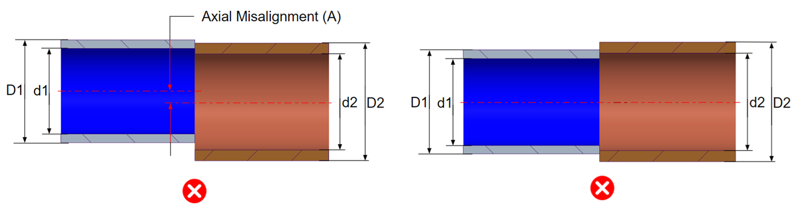
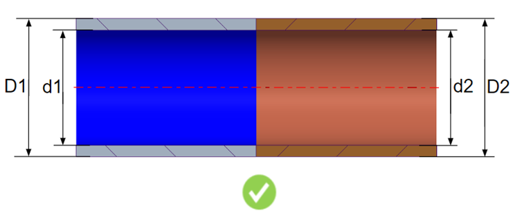

このルールは、チューブ端部の不一致ケースをチェックします。
チューブ端部は内径および外径が同一であり、かつ両方のチューブが軸方向に整列している必要があります。直径に不一致があると、不適切なチューブ接続につながります。
一般的な設計ガイドラインでは、チューブの内径および外径は同一であり、かつ軸方向に整列しているべきであると推奨されています。


ここで、
D1 および D2 = 外径
d1 および d2 = 内径